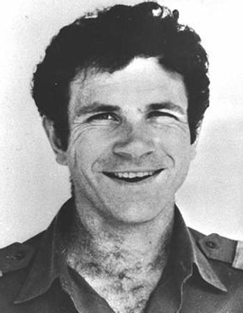

באתר המוזיאון שלנו תוכלו להתרשם מהחפצים והאמצעים הפיזיים האמיתיים ששימשו את הלוחמים או נותרו מאותם ימים גורליים באפריקה.
כדי להטעות את השומרים האוגנדים בשדה התעופה, צה"ל השיג מכונית מרצדס ארוכה בדיוק כמו זו של שליט אוגנדה, אידי אמין. המכונית נצבעה במהירות בשחור והובילה את כוח הפריצה של סיירת מטכ"ל ישירות אל פתח הטרמינל. כיום, הרכב המקורי מוצג במוזיאון לתולדות צה"ל.
ההרקולס (C-130) הוא מטוס תובלה צבאי מפורסם, בעל ארבעה מנועי טורבו-פרופ. המטוס הזה ידוע ביכולת שלו להמריא ולנחות במסלולים קצרים ומשובשים, והוא השתתף במבצעים היסטוריים רבים (כמו מבצע אנטבה).
ארבעה מטוסי תובלה ענקיים של חיל האוויר הטיסו את הלוחמים, הציוד, המרצדס והג'יפים לאוגנדה בטיסה נמוכה וחשאית כדי להתחמק ממכ"מים עוינים. המטוס המוביל במבצע, שמספרו היה 420, המשיך לשרת בחיל האוויר עוד שנים רבות עד שיצא משימוש והוצב במוזיאון חיל האוויר בחצרים.
במהלך שבוע השבי המתוח באנטבה, חלק מהחטופים כתבו מכתבים ופתקים לבני משפחותיהם בארץ, מבלי לדעת אם יזכו לראותם שוב. מכתבים אלו, שנמצאו בתיקיהם או נשמרו על ידם, מהווים היום עדות היסטורית מרגשת ומצמררת לחששות הגדולים ולקור הרוח של השבויים.
האזינו לתיאור בחדשות על המקרה באותם ימים:
|
|
|
|
 |
|